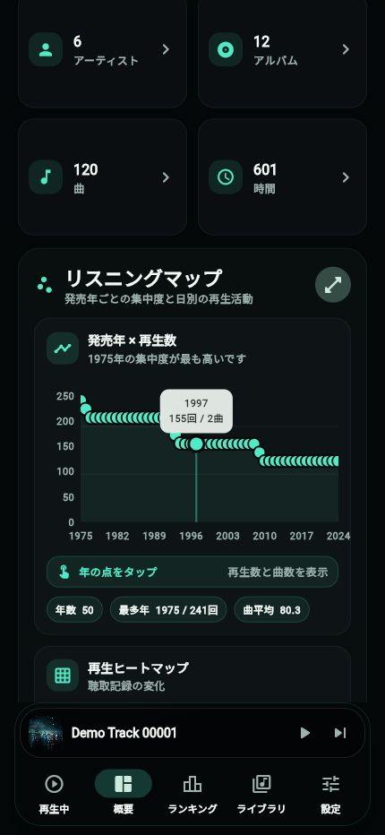
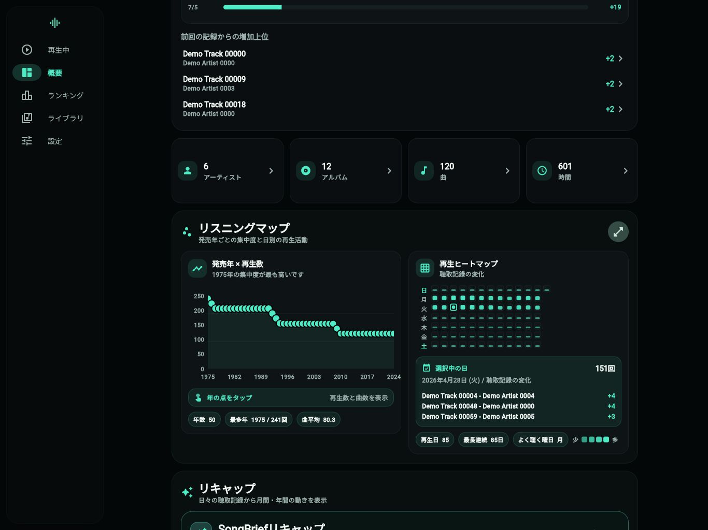

再生中の詳細
ジャケット、曲情報、再生回数、スキップ回数、登録プレイリスト、歌詞などをひとつの画面で確認できます。
SongBriefは、iOSのミュージックライブラリから再生回数、スキップ回数、最後に再生した日などを読み取り、ランキング、日次記録、リキャップとして見やすくまとめるアプリです。
SongBrief turns your local iOS music library metadata into rankings, daily records, recaps, and playback insights without sending your detailed music library to a developer-operated server.
SongBriefは、iOSが提供する音楽ライブラリのカウンターとアプリ内の記録を組み合わせ、普段の聴き方を複数の角度で確認できます。
ジャケット、曲情報、再生回数、スキップ回数、登録プレイリスト、歌詞などをひとつの画面で確認できます。
期間別のランキング、急上昇した曲、しばらく聴いていない曲、順位の変化を確認できます。
発売年、曜日、ジャンルなどの切り口で再生傾向を可視化し、詳細ビューでは曲数表示にも切り替えられます。
曲、アーティスト、アルバム、ジャンル、プレイリストを検索し、非表示条件やエクスポートで自分の見方に整えられます。
記録したライブラリの状態を比較し、前回から増えた再生回数、曜日別の再生活動、発売年別の集計を表示します。


スマートフォンではタブ中心、タブレットではサイドバー中心に切り替え、ランキングやライブラリを広い画面で見渡せるようにしています。
データの取得元、記録の保存、プライバシー、対応端末について説明します。
iOSのミュージックライブラリから取得できる曲、アルバム、アーティスト、再生回数、スキップ回数などを使います。現時点ではSpotifyやAmazon Musicの再生履歴には対応していません。
SongBrief uses metadata available from the iOS music library, including tracks, albums, artists, play counts, and skip counts. Spotify and Amazon Music listening history are not supported at this time.
SongBriefはストリーミング再生を提供するアプリではなく、iOSが許可したミュージックライブラリ情報を整理するアプリです。表示できる内容は、端末のミュージックライブラリに存在し、iOSから読み取れる情報に依存します。
SongBrief is not a streaming app. It organizes the music library information that iOS allows the app to read. Available details depend on what exists in your device's music library and what iOS exposes to apps.
SongBriefが日ごとに保存するライブラリ統計の記録です。複数日の記録を比較することで、再生数の増加、リキャップ、急上昇、再発見、ヒートマップなどを表示します。
Listening records are daily snapshots of your library statistics. SongBrief compares records from different days to show play-count changes, recaps, rising tracks, rediscovery suggestions, and activity maps.
アプリを開いた時や更新できたタイミングで記録を保存します。iOSの制約により、常に完全なバックグラウンド取得を保証するものではありません。記録が増えるほど、期間比較やリキャップが充実します。
SongBrief saves records when the app is opened or when an update can run. Because iOS limits background work, continuous background collection is not guaranteed. More records make trends and recaps more useful.
曲名、アーティスト名、アルバム名、歌詞、プレイリスト名、聴取記録などの詳細情報を、SongBrief開発者が管理するサーバーへ送信しない方針です。広告、解析、クラッシュ診断にもこれらの詳細情報を含めません。
SongBrief is designed not to send detailed music library information, such as track titles, artist names, album names, lyrics, playlists, or listening records, to a developer-operated server. Those details are also not included in ads, analytics, or crash reports.
はい。設定画面から一時キャッシュと聴取記録を分けて管理できます。聴取記録は期間を指定して古い記録だけ削除したり、すべて削除したりできます。
Yes. Temporary caches and listening records can be managed separately from Settings. You can keep a selected period, delete older records, or remove all listening records.
無料版では控えめな広告を表示する場合があります。広告が有効な場合も、音楽ライブラリの詳細情報を広告リクエストに含めない方針です。
The free version may show subtle ads. Even when ads are enabled, detailed music library information is not included in ad requests.
はい。iPhoneではタブ中心、iPadなどの広い画面ではサイドバー中心のレイアウトに切り替わります。
Yes. SongBrief uses a tab-focused layout on iPhone and switches to a sidebar-focused layout on wider screens such as iPad.
SongBriefは、曲名、アーティスト名、アルバム名、歌詞、プレイリスト名、再生履歴などを広告リクエストや解析イベントに含めない方針です。詳細はプライバシーポリシーをご確認ください。